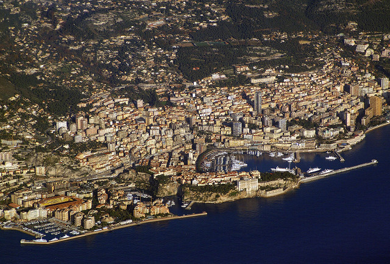

| Home | Top 10 Things To Do In The French Rivera | Top 10 Romantic Things To Do in Paris France | Ten Top Places To Visit In Paris |
|
|||
Top 10 Things To Do In The French Rivera
|
Monaco Bordered by France on three sides, the tiny country of Monaco occupies a prime stretch of real estate on the French Riviera but has a character that is entirely its own. The mere mention of the principality conjures up images of multi-million yachts, money-draining casinos and high-priced hotels. Gambling facilities have made Monaco a famous tourist destination, and the casino Monte Carlo is still one of Monaco’s biggest attraction. Other attractions include the Oceanographic Museum and Aquarium as well as the changing of the guard at Monaco-Ville, a palace that was originally a medieval fortress. |